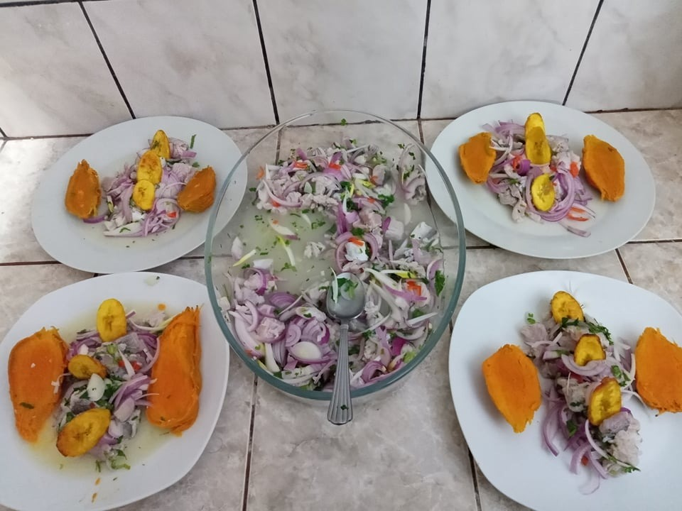
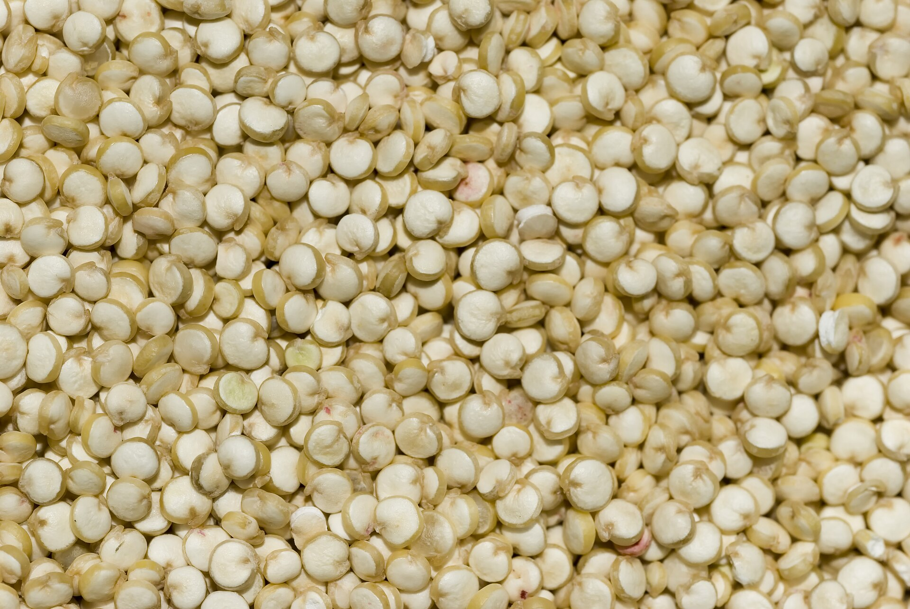
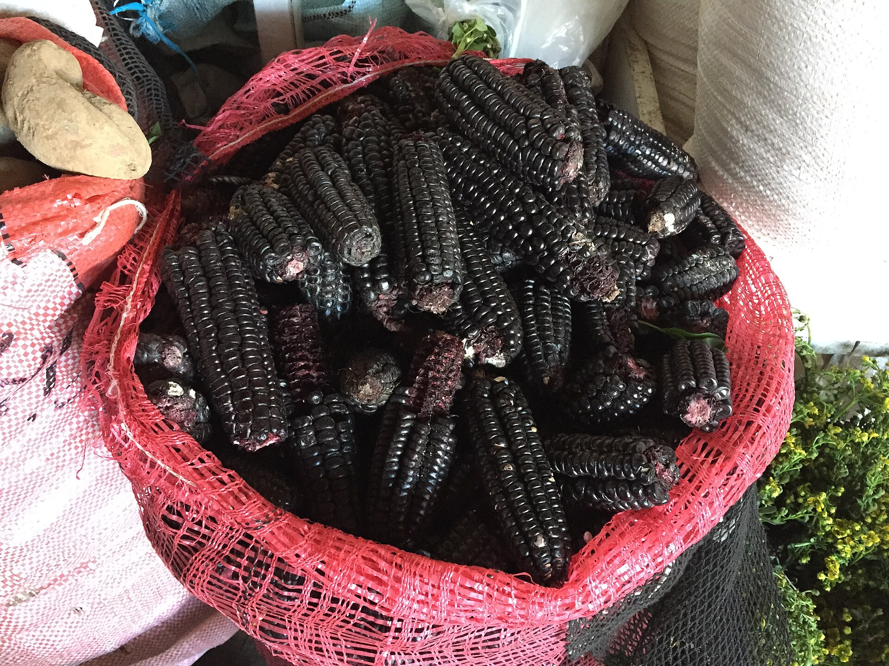
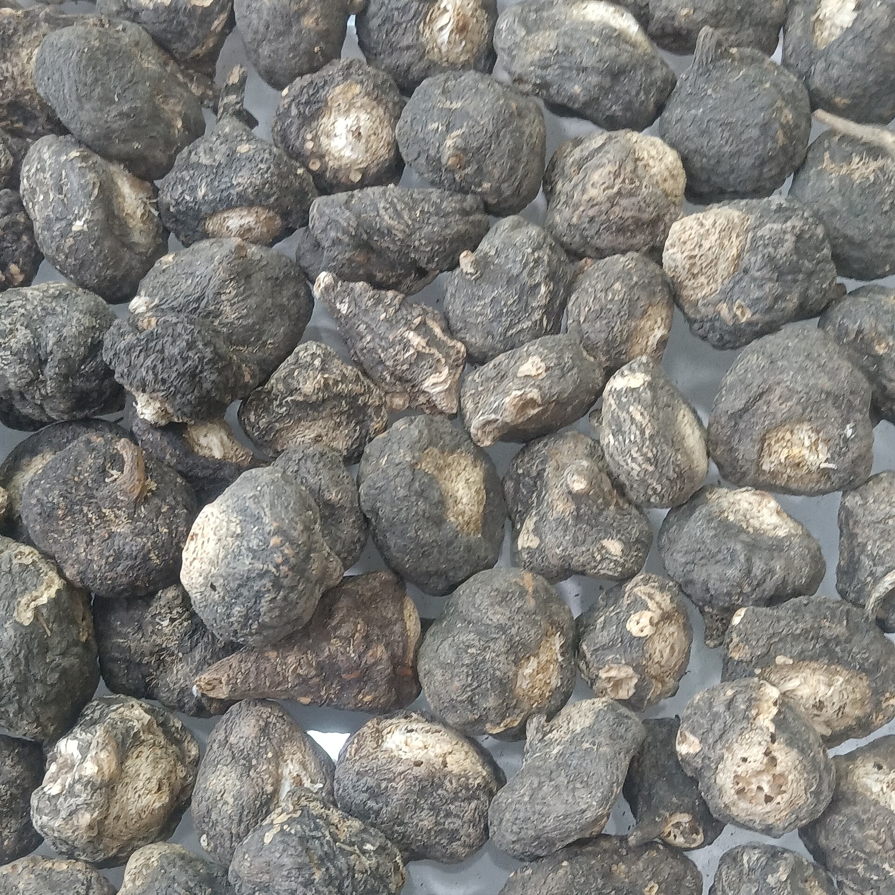
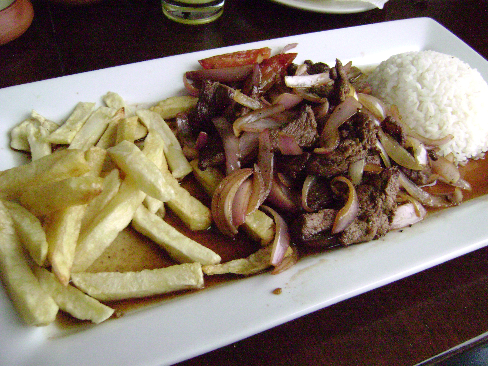
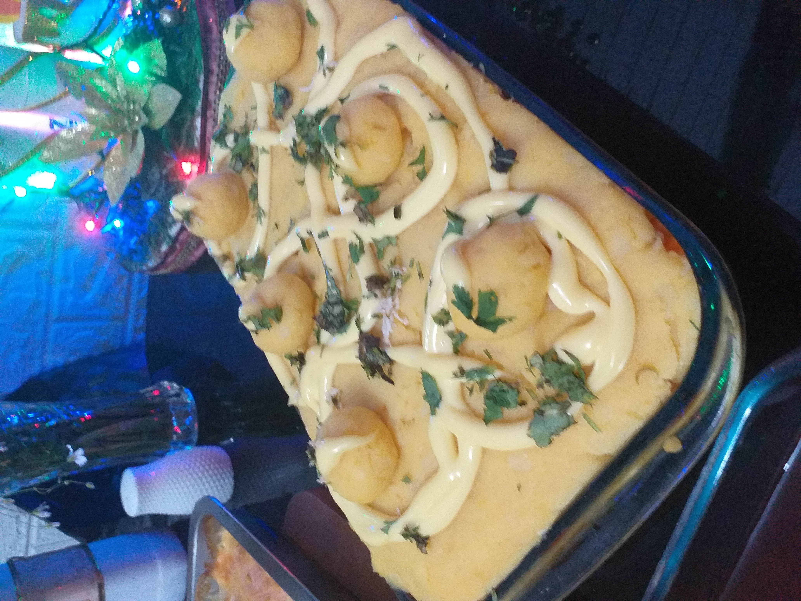

Ceviche

Feito principalmente com peixe cru marinado em suco cítrico, acompanhado de ingredientes como cebola e pimenta. O preparo varia conforme o lugar.
Peixe · cítricos · cebola

Quinoa, milho roxo e maca são ingredientes tradicionais ligados principalmente aos Andes e à alimentação peruana. Na nossa mesa, você encontra amostras desses produtos.
Um alimento andino com história muito anterior aos Incas.
A quinoa faz parte dos saberes agrícolas andinos. Preservar esse cultivo também valoriza quem guarda sementes, técnicas e receitas transmitidas entre gerações.
Você pode observar uma amostra deste alimento em nossa mesa.
FAO: quinoa e seu valor nutritivo.
Dos cultivos tradicionais à chicha morada.
O Peru celebra o Dia Nacional do Maíz Morado, Maíz Choclo e Maízes para Cancha em 5 de maio, valorizando sua importância econômica, social e cultural.
Você pode observar uma amostra deste alimento em nossa mesa.
MIDAGRI e INIA: diversidade e características do milho roxo.
Uma planta cultivada nas áreas altas dos Andes centrais.
A maca mostra como comunidades adaptaram cultivos ao frio e à altitude. Valorizar esse alimento é reconhecer saberes agrícolas, sem transformá-lo em medicamento.
Você pode observar uma amostra deste alimento em nossa mesa.
FAO: Neglected crops, capítulo sobre maca.A culinária também revela encontros culturais. Além dos ingredientes da nossa mesa, conheça três preparações tradicionais.

Feito principalmente com peixe cru marinado em suco cítrico, acompanhado de ingredientes como cebola e pimenta. O preparo varia conforme o lugar.
Peixe · cítricos · cebola

Carne salteada com cebola, tomate e outros ingredientes, como molho de soja. Expressa o encontro de técnicas e sabores peruanos e chineses.
Carne · cebola · tomate

Tradicionalmente preparada com batata amarela temperada, geralmente em camadas com recheios variados, como frango ou abacate. Também chamada causa limeña.
Batata · temperos · recheios
Renda, abastecimento, água segura e educação alimentar influenciam o que chega ao prato. Nenhum alimento sozinho resolve a desnutrição ou as desigualdades.